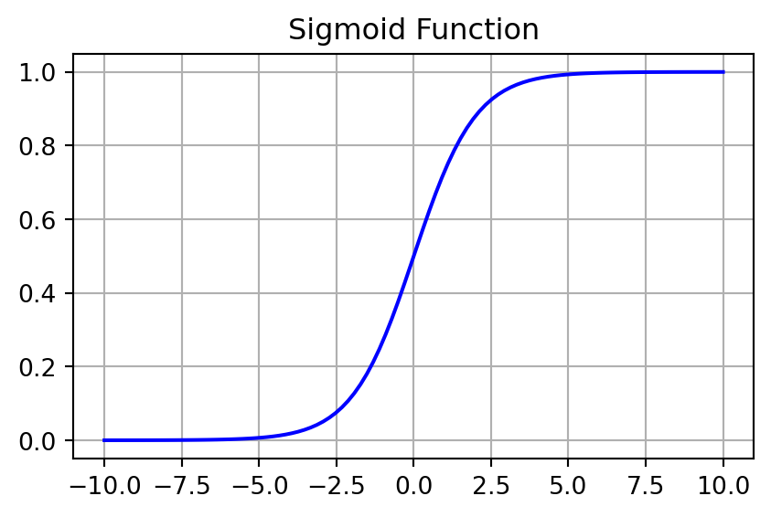
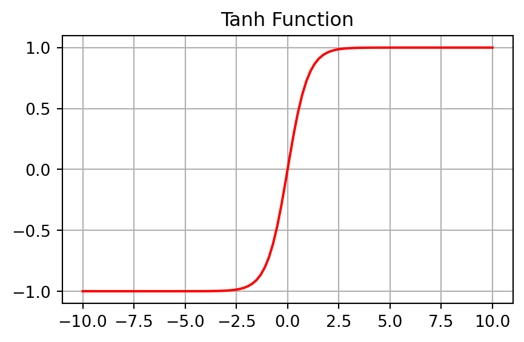
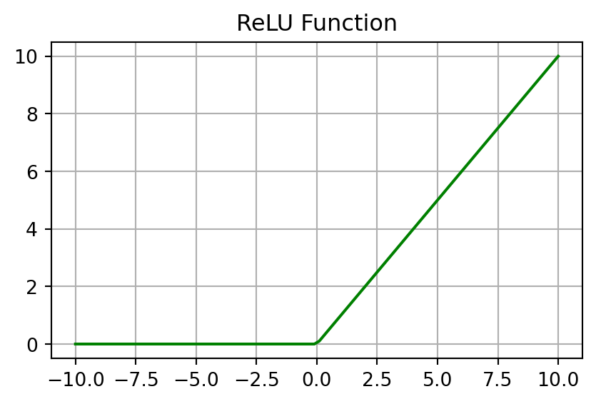
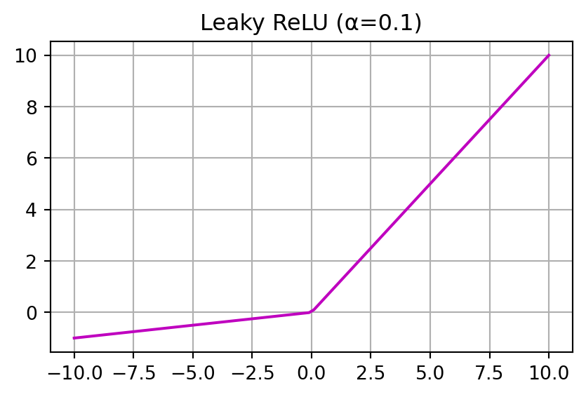
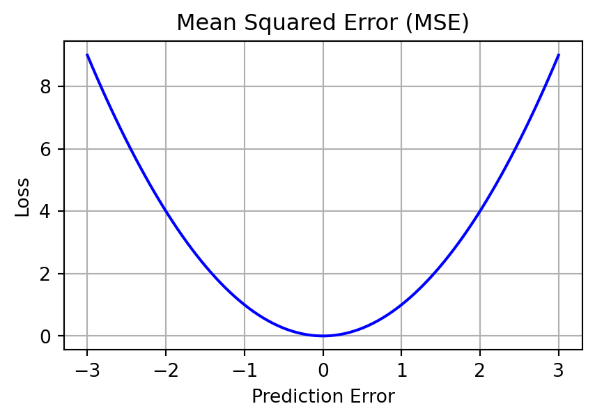
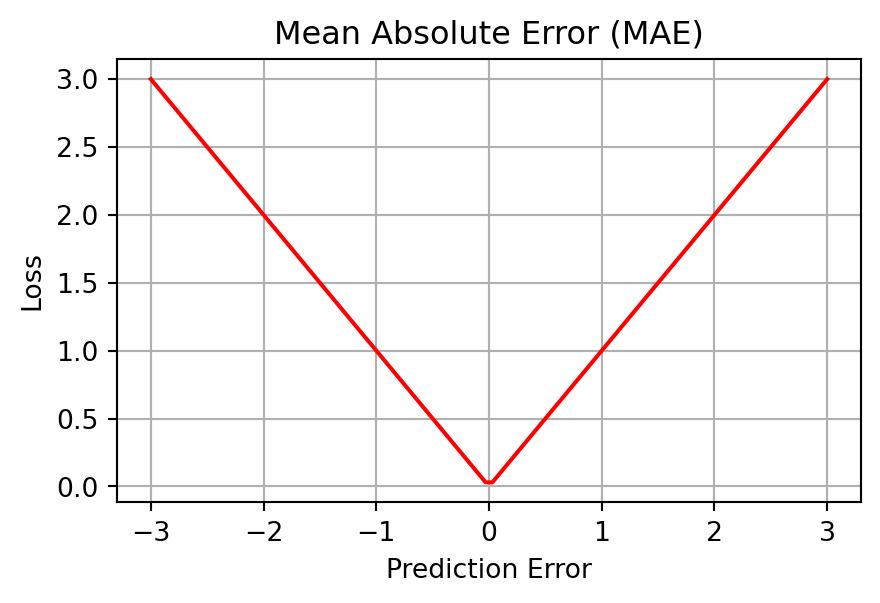
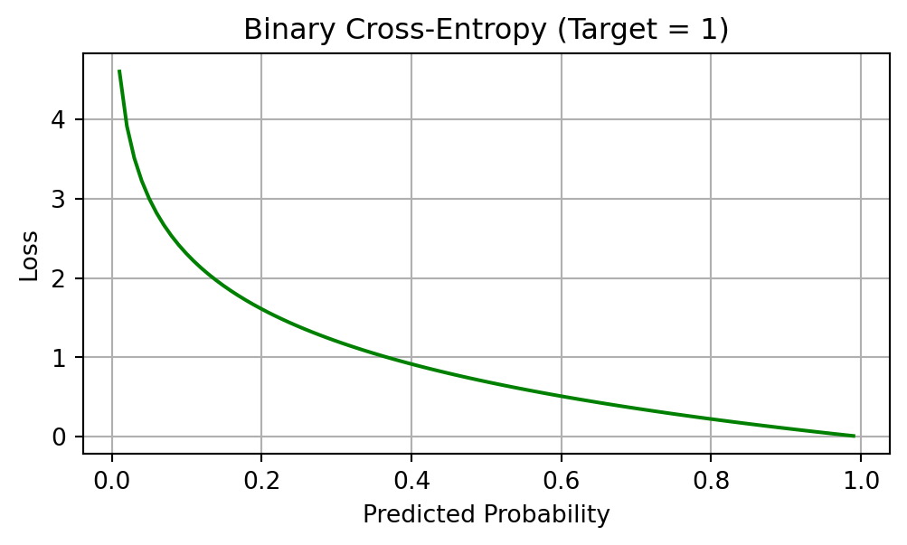
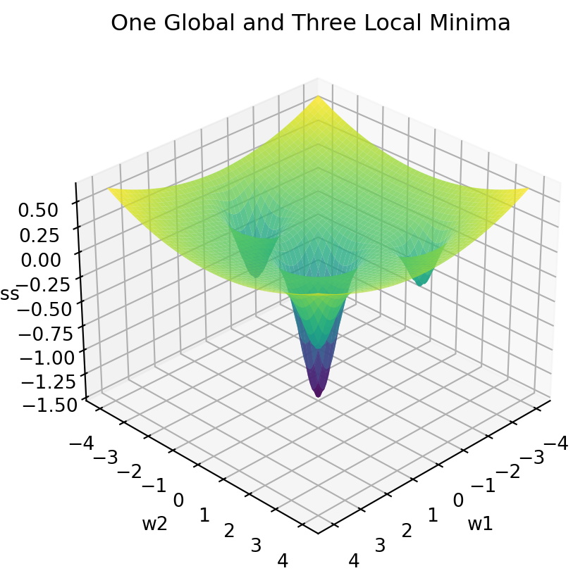
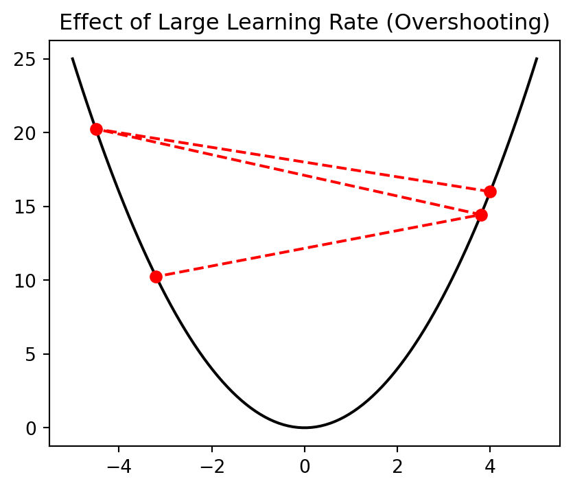

6. Basics of Deep Learning
3316512 Pharmaceutical AI
Natapol Pornputtapong, PhD
Chulalongkorn University
11 Mar 2026
What is Deep Learning?
- A subset of Machine Learning based on Artificial Neural Networks.
- “Deep” refers to the number of layers in the network.
- Mimics the way the human brain processes information (to some extent).
- Capable of learning representation directly from raw data (feature engineering is automated).
The Basic Unit: The Perceptron
- Proposed by Frank Rosenblatt in 1958.
- The fundamental building block of neural networks.
The Perceptron structure
y = f(\sum_{i=1}^{n} weight_i \cdot input_i + bias)
Why Activation Functions?
- Non-linearity: Without them, a multi-layer neural network would behave like a single-layer linear model.
- Complexity: Allow the network to approximate any continuous function (Universal Approximation Theorem).
- Differentiability: Crucial for backpropagation and weight updates.
Sigmoid Activation
- Formula: \sigma(z) = \frac{1}{1 + e^{-z}}
- Domain: (-\infty, \infty)
- Range: (0, 1)
- Pros: Good for binary classification output.
- Cons: Vanishing gradient problem, output not zero-centered.

Hyperbolic Tangent (Tanh)
- Formula: \tanh(z) = \frac{e^z - e^{-z}}{e^z + e^{-z}}
- Domain: (-\infty, \infty)
- Range: (-1, 1)
- Pros: Zero-centered, generally better than Sigmoid for hidden layers.
- Cons: Still prone to vanishing gradients.

Rectified Linear Unit (ReLU)
- Formula: f(z) = \max(0, z)
- Domain: (-\infty, \infty)
- Range: [0, \infty)
- Pros: Computationally efficient, reduces vanishing gradients.
- Cons: “Dying ReLU” problem (neurons can get stuck at zero output).

Leaky ReLU
- Formula: f(z) = \max(\alpha z, z), where \alpha is small (e.g., 0.01).
- Domain: (-\infty, \infty)
- Range: (-\infty, \infty)
- Pros: Fixes “Dying ReLU” by allowing a small gradient for z < 0.

Softmax Function
- Formula: \text{Softmax}(z_i) = \frac{e^{z_i}}{\sum_{j} e^{z_j}}
- Purpose: Converts a vector of scores (logits) into a probability distribution.
- Properties:
- Output values are in [0, 1].
- Sum of all output values is exactly 1.
- Usage: Typically used in the output layer for multi-class classification.
Multi-Layer Perceptron (MLP)
- Consists of an input layer, one or more hidden layers, and an output layer.
- Each layer is a collection of neurons.
Phase 1: Feedforward (Forward Pass)
- Data flows from the Input layer through Hidden layers to the Output layer.
- At each neuron:
- Compute the weighted sum of inputs: z = \sum w_i x_i + b
- Apply an activation function: a = f(z)
- The final result is the model’s Prediction.
Phase 2: Backpropagation
- The core mechanism for neural network learning.
- The Process:
- Calculate the Loss (error) at the output layer.
- Calculate the Gradient of the loss with respect to each weight using the Chain Rule.
- Gradients flow backward from output to input layers.
What is a Loss Function?
- Definition: A mathematical function that quantifies the difference between the model’s prediction and the actual target.
- The Optimization Goal: To find the weights that minimize this loss value.
- Loss vs. Cost:
- Loss: Error for a single data point.
- Cost: Average loss over the entire dataset.
Regression: Mean Squared Error (MSE)
- Formula: L = \frac{1}{n} \sum (y_{true} - y_{pred})^2
- Pros: Penalizes large errors heavily (due to squaring).
- Cons: Sensitive to outliers.
- Usage: Standard choice for regression tasks.

Regression: Mean Absolute Error (MAE)
- Formula: L = \frac{1}{n} \sum |y_{true} - y_{pred}|
- Pros: More robust to outliers than MSE.
- Cons: Gradient is constant, which can make it harder for the model to converge near the minimum.

Binary Classification: Log Loss
- Also known as Binary Cross-Entropy.
- Formula: L = - \frac{1}{n} \sum [y \log(\hat{y}) + (1-y) \log(1-\hat{y})]
- Usage: Used when the output is a probability (Sigmoid activation).

Multi-Class Classification
- Categorical Cross-Entropy:
- L = - \sum_{i=1}^{C} y_i \log(\hat{y}_i)
- Used with Softmax activation in the output layer.
- Sparse Categorical Cross-Entropy:
- Same formula as above, but targets are integers (e.g., 0, 1, 2) instead of one-hot encoded vectors.
Optimization: The Goal
- Goal: Minimize the Loss Function L(W) by adjusting weights W.
- Analogy: Descending a mountain in thick fog. You can only feel the slope (gradient) under your feet and must decide which way to step.
Optimization landscape
The Landscape: The loss function creates a “surface” or “landscape” where valleys represent low loss (good models) and peaks represent high loss.

Gradient Descent
- The core optimization algorithm.
- Update Rule: w_{t+1} = w_t - \eta \cdot \nabla L(w_t)
- Components:
- w_t: Current weights.
- \eta (eta): Learning Rate (step size).
- \nabla L(w_t): Gradient (direction of steepest increase).
The Importance of Learning Rate (\eta)
- Too Small: Convergence is very slow; might get stuck in local minima.
- Too Large: May overshoot the minimum and oscillate or diverge.
- Optimal: Finds the bottom efficiently.

Gradient Descent Variants
- Batch Gradient Descent: Uses the entire dataset to compute one gradient update.
- Pros: Stable convergence.
- Cons: Very slow for large data.
- Stochastic Gradient Descent (SGD): Uses one random sample per update.
- Pros: Fast, can escape local minima.
- Cons: High variance in updates (noisy).
- Mini-batch Gradient Descent: Uses a small subset (e.g., 32, 64 samples).
- Best of both worlds: Standard practice in Deep Learning.
Beyond Basic SGD: Modern Optimizers
- Momentum: Adds a fraction of the previous update to the current one (helps “roll over” small hills).
- RMSprop: Adapts the learning rate for each parameter individually based on recent gradients.
- Adam (Adaptive Moment Estimation):
- Combines Momentum and RMSprop.
- The “Gold Standard” for most deep learning tasks.
- Fast, robust, and requires little tuning.
The Vanishing/Exploding Gradient Problem
- During backpropagation, gradients can become extremely small (vanishing) or extremely large (exploding).
- Vanishing: Network stops learning.
- Exploding: Network becomes unstable.
- Solutions: ReLU activation, Batch Normalization, Weight Initialization techniques (He, Xavier).
Fully Connected (FC) Layer
- Also known as a Dense or Linear layer.
- The Definition: Every neuron in the input layer is connected to every neuron in the output layer.
- Each connection has an associated Weight (w_{ij}).
- The layer learns to weight features according to their importance.
FC Layer: The Math
- The Operation: Y = f(W \cdot X + b)
- X: Input vector
- W: Weight matrix
- b: Bias vector
- f: Activation function
- Flattening: Before inputting multi-dimensional data (like an image) into an FC layer, it must be “flattened” into a 1D vector.
Convolutional Neural Networks (CNN)
- Specialty: Grid-like data (Images, Video).
- Key Idea: Uses Convolutional filters to learn spatial hierarchies of features.
- Components: Convolutional layers, Pooling layers (dimensionality reduction), Flattening, and Dense layers.
Recurrent Neural Networks (RNN & LSTM)
- Specialty: Sequential data (Time-series, Speech, Text).
- Key Idea: Maintains a hidden state (memory) that flows from one time step to the next.
- LSTM (Long Short-Term Memory): Uses “gates” to decide what to remember or forget, solving the vanishing gradient problem in long sequences.
Transformers (Attention mechanism)
- Specialty: Natural Language Processing (LLMs like GPT, BERT).
- Key Idea: Self-Attention allows the model to focus on relevant parts of the input sequence regardless of distance.
- Benefit: Highly parallelizable compared to RNNs.
Graph Neural Networks (GNN)
- Specialty: Non-Euclidean data (Molecules, Social Networks).
- Key Idea: Learns embeddings by passing messages between neighboring nodes in a graph.
- Application: Predicting molecular properties in drug discovery.
Deep Learning with PyTorch: Model Setup
- PyTorch is a popular framework for deep learning.
- It uses a “modular” approach to build neural networks.
Deep Learning with PyTorch: Loss and Optimizer
Deep Learning with PyTorch: Training Loop
- The standard training process involves these 4 steps in every iteration (epoch).
for epoch in range(num_epochs):
# 1. Forward Pass: Get predictions
outputs = model(inputs)
loss = criterion(outputs, targets)
# 2. Backward Pass: Compute gradients
optimizer.zero_grad() # Reset old gradients
loss.backward() # Backpropagation
# 3. Update Weights: Move weights toward the minimum
optimizer.step() # Optimization step
print(f'Epoch [{epoch+1}/{num_epochs}], Loss: {loss.item():.4f}')ML Debugging: Start Simple & Sanity Checks
- Start with a Simple Model: Use an interpretable model (e.g., Logistic Regression) to establish a performance floor.
- Baselines: Compare against:
- Random/Constant: Most frequent class.
- Simple Heuristics: Basic “if-then” rules.
- Human Baseline: Domain expert performance.
- Sanity Check: Overfit a Single Batch.
- If your model cannot achieve near-zero loss on 10–50 examples, there is a bug in the code or architecture.
Data-Centric Debugging
- Data Leakage: Ensure “future” features aren’t used for training (e.g., total spend to predict first purchase). Use Time-based splits.
- Slice-based Evaluation:
- Aggregate metrics (e.g., 95% accuracy) can hide failures on critical sub-populations.
- Evaluate performance on specific slices (e.g., gender, age group, or device type).
- Unit Tests for Data: Verify data invariants (e.g.,
age > 0,IDs are unique).
Post-Deployment: Distribution Shift
Debugging continues after the model is live. Monitor for:
- Data Drift: The distribution of input features (P(X)) changes over time.
- Concept Drift: The relationship between features and labels (P(Y|X)) changes (e.g., consumer behavior changes).
- Prediction Drift: The model’s output distribution shifts from what was seen during training.
Pro-Tip
Use Interpretability Tools (SHAP, LIME) to see if the model is looking at “noise” features or actual signals.